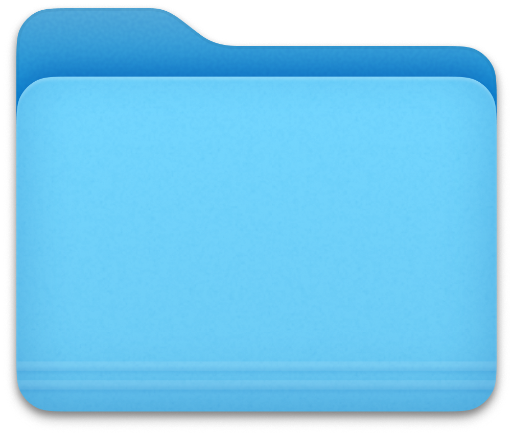

About Me
Assignment 1
I grew up in Singapore but moved to Melbourne in 2024 to further my studies at RMIT, where I'm focusing on digital media specifically, UX/UI design.
My favourite emoji is 🥲
My go-to software is After Effects, Premiere Pro and Illustrator. I've also coded in HTML, CSS, JS and a bit of Xcode.